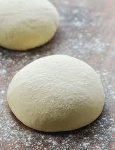

How to make pizza dough.

Simple and quick, yet pretty tasty pizza dough!
The dough turns out crunchy!
Ingredients:
- Flour
- A glass of water
- Yeast
- Salt
- Oil
Steps:
- Pour oil and yeast in a bowl and stir well
- Add water to the mixture and stir more
- Finally, add salt and flour. Don't add to much, it should be relatively sticky
Go back to the main page